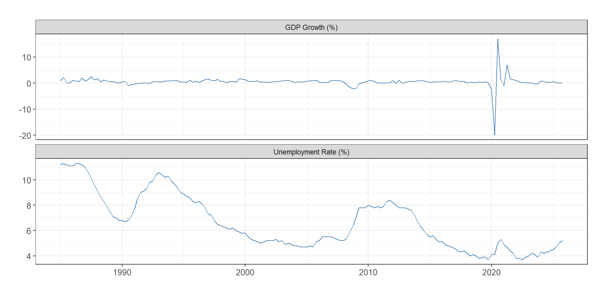
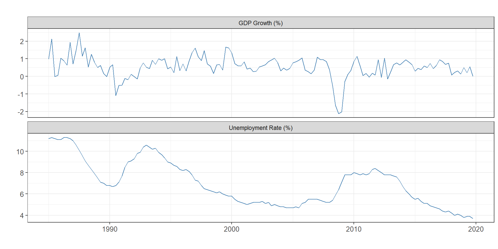
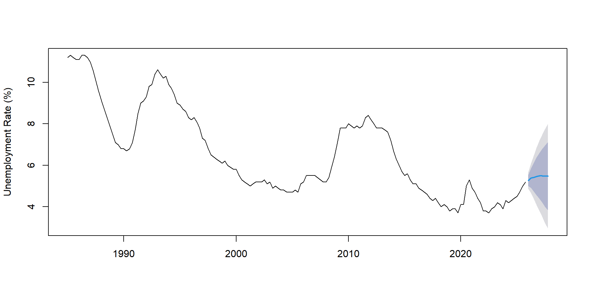
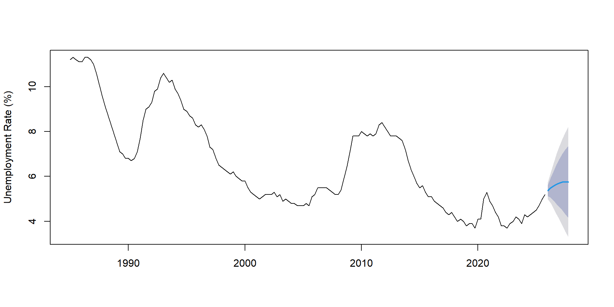
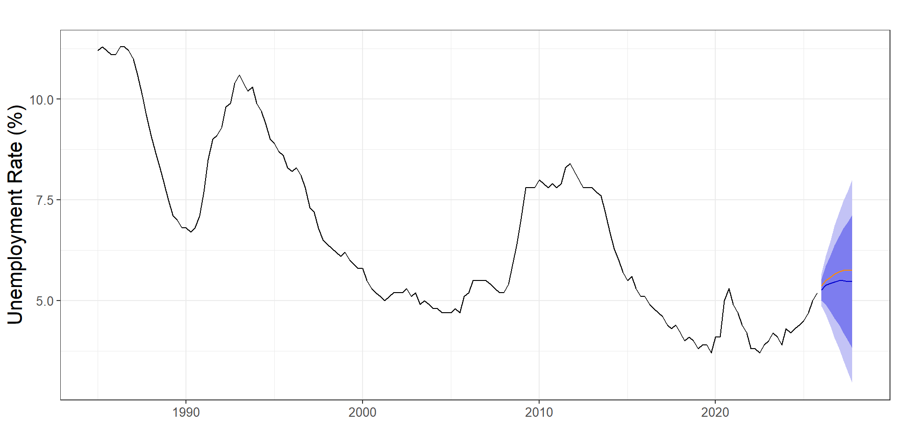

| Year | Quarter | Rate |
|---|---|---|
| 1985 | 1 | 11.2 |
| 1985 | 2 | 11.3 |
| 1985 | 3 | 11.2 |
| 1985 | 4 | 11.1 |
| 1986 | 1 | 11.1 |
| 1986 | 2 | 11.3 |
United Kingdom
Unemployment rate and economic growth
ARIMA
Cointegration
VAR
Conclusion
| Year | Quarter | Rate |
|---|---|---|
| 1985 | 1 | 11.2 |
| 1985 | 2 | 11.3 |
| 1985 | 3 | 11.2 |
| 1985 | 4 | 11.1 |
| 1986 | 1 | 11.1 |
| 1986 | 2 | 11.3 |
| Year | Quarter | Rate |
|---|---|---|
| 1985 | 1 | 0.9773039 |
| 1985 | 2 | 2.1212783 |
| 1985 | 3 | -0.0182974 |
| 1985 | 4 | 0.0657585 |
| 1986 | 1 | 1.0427645 |
| 1986 | 2 | 0.8908850 |


Augmented Dickey-Fuller Test
data: unemployment_ts
Dickey-Fuller = -3.0714, Lag order = 5, p-value = 0.1293
alternative hypothesis: stationary
Augmented Dickey-Fuller Test
data: gdp_ts
Dickey-Fuller = -6.1686, Lag order = 5, p-value = 0.01
alternative hypothesis: stationary
Augmented Dickey-Fuller Test
data: diff(unemployment_ts)
Dickey-Fuller = -3.8482, Lag order = 5, p-value = 0.01839
alternative hypothesis: stationary

ME RMSE MAE MPE MAPE MASE
Training set -0.01318315 0.2026025 0.1580113 -0.1420743 2.61675 0.2440329
ACF1
Training set -0.01370712 ME RMSE MAE MPE MAPE MASE
Training set -0.02195328 0.19013 0.1516835 -0.3247762 2.498072 0.2342602
ACF1
Training set -0.01483334
Time series regression with "ts" data:
Start = 1985(4), End = 2025(4)
Call:
dynlm(formula = d(e) ~ 0 + L(e, 1) + L(d(e), 1:2))
Residuals:
Min 1Q Median 3Q Max
-1.90358 -0.15765 -0.04944 0.09562 1.10797
Coefficients:
Estimate Std. Error t value Pr(>|t|)
L(e, 1) -0.02631 0.01132 -2.323 0.021430 *
L(d(e), 1:2)1 0.10627 0.07496 1.418 0.158278
L(d(e), 1:2)2 0.29286 0.07519 3.895 0.000145 ***
---
Signif. codes: 0 '***' 0.001 '**' 0.01 '*' 0.05 '.' 0.1 ' ' 1
Residual standard error: 0.3001 on 158 degrees of freedom
Multiple R-squared: 0.1338, Adjusted R-squared: 0.1173
F-statistic: 8.134 on 3 and 158 DF, p-value: 4.526e-05
VAR Estimation Results:
=========================
Endogenous variables: unemployment_ts, gdp_ts
Deterministic variables: const
Sample size: 161
Log Likelihood: -288.56
Roots of the characteristic polynomial:
0.9347 0.7421 0.5763 0.5763 0.2459 0.213
Call:
VAR(y = data_var, p = lag_selection$selection["AIC(n)"], type = "const")
Estimation results for equation unemployment_ts:
================================================
unemployment_ts = unemployment_ts.l1 + gdp_ts.l1 + unemployment_ts.l2 + gdp_ts.l2 + unemployment_ts.l3 + gdp_ts.l3 + const
Estimate Std. Error t value Pr(>|t|)
unemployment_ts.l1 1.318539 0.078607 16.774 < 2e-16 ***
gdp_ts.l1 -0.042886 0.007187 -5.967 1.6e-08 ***
unemployment_ts.l2 -0.148790 0.130089 -1.144 0.25450
gdp_ts.l2 -0.038168 0.008105 -4.710 5.5e-06 ***
unemployment_ts.l3 -0.186706 0.072123 -2.589 0.01056 *
gdp_ts.l3 -0.005555 0.007824 -0.710 0.47880
const 0.139392 0.047998 2.904 0.00423 **
---
Signif. codes: 0 '***' 0.001 '**' 0.01 '*' 0.05 '.' 0.1 ' ' 1
Residual standard error: 0.1828 on 154 degrees of freedom
Multiple R-Squared: 0.9925, Adjusted R-squared: 0.9922
F-statistic: 3387 on 6 and 154 DF, p-value: < 2.2e-16
Estimation results for equation gdp_ts:
=======================================
gdp_ts = unemployment_ts.l1 + gdp_ts.l1 + unemployment_ts.l2 + gdp_ts.l2 + unemployment_ts.l3 + gdp_ts.l3 + const
Estimate Std. Error t value Pr(>|t|)
unemployment_ts.l1 -3.710276 0.866365 -4.283 3.24e-05 ***
gdp_ts.l1 -0.312371 0.079210 -3.944 0.000122 ***
unemployment_ts.l2 5.629137 1.433769 3.926 0.000130 ***
gdp_ts.l2 -0.292099 0.089323 -3.270 0.001326 **
unemployment_ts.l3 -1.855480 0.794902 -2.334 0.020876 *
gdp_ts.l3 0.009422 0.086230 0.109 0.913137
const 0.335072 0.529011 0.633 0.527416
---
Signif. codes: 0 '***' 0.001 '**' 0.01 '*' 0.05 '.' 0.1 ' ' 1
Residual standard error: 2.015 on 154 degrees of freedom
Multiple R-Squared: 0.2192, Adjusted R-squared: 0.1888
F-statistic: 7.206 on 6 and 154 DF, p-value: 8.612e-07
Covariance matrix of residuals:
unemployment_ts gdp_ts
unemployment_ts 0.03342 -0.02477
gdp_ts -0.02477 4.05919
Correlation matrix of residuals:
unemployment_ts gdp_ts
unemployment_ts 1.00000 -0.06725
gdp_ts -0.06725 1.00000Unemployment rate in UK is non-stationary, while GDP growth rate is stationary.
Cointegration analysis indicates no long-run equilibrium relationship between unemployment and GDP growth.
The ARIMAX model with lagged GDP growth provides improved forecast accuracy compared to the ARIMA model alone.
The VAR model reveals significant short-run dynamics
Policymakers should consider the short-run interactions between unemployment and economic growth when designing economic policies aimed at reducing unemployment.